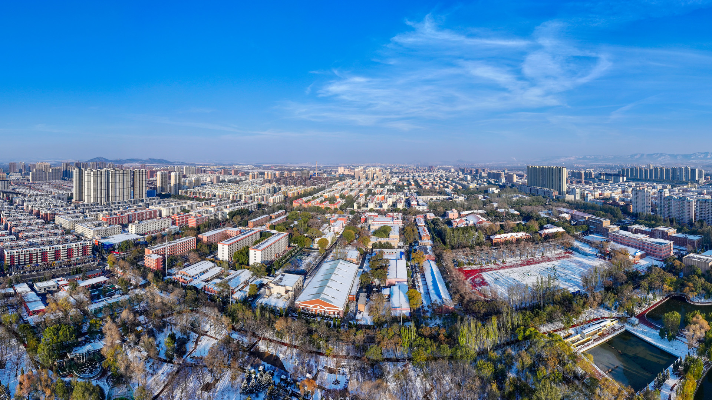

P01 封面 16:9
辽宁工程技术大学
诚朴求是 · 博学笃行
汇报人 请填写姓名 导师 请填写导师 学院 请填写学院或实验室 汇报日期 请填写汇报日期
演讲备注 标题建议一至两行。封面与尾页标题均为 PPT 40pt（画布约 67px），条带均为 330px，横版标志高度均为 120px。说明文字与汇报信息按实际需要填写。
P02 字号与留白 16:9
正文从分割线下方开始，首句直接说明本页主题，与后续内容保持同一阅读顺序。
文字层级 画布 px ≈ PPT pt ≈ 使用范围
封面 / 尾页 67 40 主标题保持一致 正文页标题 47 28 优先保持一行 分组 / 分项标题 33 / 30 20 / 18 明确上下级关系 板块题目 / 正文 30 / 27 18 / 16 题目加大加粗 独立公式 27 16 统一数学字形 表格内文字 13–23 8–14 按内容密度调整 图标题 / 页脚 23 / 17 14 / 10 图注说明用 12pt
换算说明
标准宽屏下 PPT pt＝画布 px×0.6；本表按常用整数档位显示，px 四舍五入。
CSS 自身的 pt＝px×0.75，两者口径存在差异。
清楚表达
中文优先使用微软雅黑。 英文与数字自然衔接 Aa 0123。 换行与对齐 避免末行只剩一至三个字。 适量改写，或按完整语义分行。 正文、图注和表格均须复查。 并列文字末行尽量对齐。 左右各留 58px，校徽为 120×120px。更改 PowerPoint 实际页面尺寸后，须重新核算字号并检查换行。
演讲备注 标题区高度 168px。正文区自 y=192px 开始，至 y=810px 结束。校徽在 7px 顶部装饰条与 y=166px 分割线之间居中，上下净空均为 19.5px。首句是正文第一段，不放回 header。字号通过 :root 统一修改。本页主标题 28pt，强调字 20pt，卡片标题 18pt，列表文字 14pt；标题与内容同时用字号和字重区分。并列提示采用 ul/li，圆点至文字间距约 24px，对应标准宽屏 PPT 约 0.5cm，续行对齐文字起点。下方“换算说明”采用独立标题和两个完整段落，结合语义改写与空间安排，使信息更充分；改写时保持事实、换算关系和适用条件准确。
P03 主题色彩与应用 16:9
钢魂红建立主视觉，炉火红与朝霞红区分重点；浅红底承载说明，文字始终保持清晰。
钢魂红 #A31418
作为标题、表头与主视觉用色。
炉火红 #D91F01
用于重点或少量强调，避免滥用。
浅红底 #FCF1EE
用于图文卡片、说明与辅助分组。
深色应用：白字呈现核心信息 适用于封面、年份栏和表头。保留必要的颜色区分，让重点服务内容，避免整页大面积饱和色。
浅色应用：内容保留阅读层次 适用于正文卡片、图注和辅助说明。图像与文字共用同一浅底，靠字号、间距和边线明确结构。
#A31418 #D91F01 #D3482C
普通内容浅底 #FCF1EE；箭头等粗体短标题区可用 #FAE9E5，文字使用钢魂红。
演讲备注 四个色值来自用户提供的配色参考图，不将其称为学校正式发布的标准色规范。原始校徽使用用户提供的PNG，不重绘、不改色；其像素颜色可能与演示主题略有差异。
P04 目录页 16:9
本次汇报围绕研究问题、方法设计与实验验证展开，最后讨论当前局限及后续安排。
01 明确研究对象、评价指标与约束，说明现有工作的不足。
02 解释关键设计如何回应研究问题，给出必要公式与流程。
03 在统一条件下比较方法，结合消融与失败情形解释差异。
04 归纳证据支持的进展，把当前问题落实为可检查的任务。
演讲备注 字号与配色规范放在目录前，统一标为“00 整体规范”。目录后从 01 开始，各章先放过渡页，再连续展示本章全部正文；不得在下一章开始后插回上一章。参考资料独立归入“附录”，不计入“总结与计划”。
P05 章节过渡 16:9
01
研究背景 Research Background
演讲备注 本页开启 01 研究背景。上一章正文须先展示完整，本页之后连续展示本章全部正文；目录、过渡页、左上章节标签与侧栏分组保持一致。
P06 双栏正文 16:9
一个完整的研究问题需要说明优化目标、决策边界，以及用于验证方法有效性的证据。
问题定义 交代研究对象、输入输出与主要约束，明确时间、能耗或质量指标的单位。
现有方法的局限 只讨论与本研究直接相关的不足，说明其出现条件，并给出文献或实验依据。
评价边界 区分训练与测试场景，明确资源预算、适用范围和比较条件。
本研究的处理方式 说明方法如何利用问题结构。 解释关键设计与目标之间的关系。 给出与基线方法一致的验证条件。 验证证据 用主结果与消融实验验证关键设计，同时记录波动范围、失败情形和计算开销。
本页要点：研究目标、方法设计与验证证据应当相互对应。
演讲备注 左右栏适合并列或对照。按实际研究内容改写全部示例文字。底部结论条可删除，主内容会自动获得更多高度。标题尽量短，首句避免复述标题。
P07 四阶段研究现状 16:9
七十余载扎根矿业、服务能源，学校从行业办学走向多学科发展，在重点大学建设与工程实践中传承太阳石精神，面向矿业、安全与智能装备拓展科研创新。
1949年 1949年，学校创建于新中国成立前夕，面向矿业与煤炭工业的人才需求开展办学，在艰苦创业中奠定服务行业、重视实践的办学基础。
1978年 1978年，学校被确定为全国88所重点大学之一，办学基础进一步巩固。学校坚持行业特色，逐步拓展人才培养层次与科研服务领域。
1996年 1996年，阜新矿业学院更名为辽宁工程技术大学，进入多学科协调发展的新阶段，持续推动工程教育、科学研究与产业需求相衔接。
新时代 
面向能源行业与区域发展需求，学校聚焦矿山开采、灾害防治、北斗导航与智能装备等方向，推进学科交叉与产教融合，服务工程实践。
因煤而立奠基
重点大学建设
工程大学拓展
矿业安全创新
演讲备注 以校史演示四阶段研究现状。校园配图仅作示意，不表示照片拍摄于对应年份。学校历史节点以官网为据；真实研究须替换为代表工作及其贡献、能力、局限。年份24pt、箭头标题18pt、段落14pt；图文共用浅红底，竖线顶端与年份色块顶端齐平。四栏间距16px，箭头两端比内容各多留32px。
P08 章节过渡 16:9
演讲备注 本页开启 02 研究方法。上一章正文须先展示完整，本页之后连续展示本章全部正文；目录、过渡页、左上章节标签与侧栏分组保持一致。
P09 公式页 16:9
以带 L2 正则项的线性回归为例，先给出优化目标，再说明参数更新与各符号含义。
符号说明 训练样本数，用于误差项归一化 第 i 个输入样本与对应的目标值 待优化的参数，与输入维度一致 正则化强度，λ ≥ 0；控制参数约束 学习率，α > 0；结合损失变化选择 迭代序号，由初始参数开始计数
字体样式说明
常规斜体 标量、参数 粗斜体 向量 粗正体 矩阵 常规正体 数字、单位、函数
演讲备注 每个公式独立成框：18pt 深底白字题目条与浅色框上下贴合，公式和解释均为 16pt（画布约 27px）。右侧浅色框展示斜体、粗斜体、粗正体与常规正体的实际字形示例。公式与符号统一使用 Cambria Math 生成的轮廓 SVG，每个对象只显示一份，不运行联网二次渲染。符号栏使用同字体数学 SVG，行内变量使用 var 斜体，编辑 LaTeX 后运行 scripts/render-formulas.py 重绘 SVG，再刷新图片缓存；解释和符号表同步更新。所有段落都要检查末行孤字，先适量改写，再按语义分行；不可只为排版删掉必要条件。
P10 伪代码页 16:9
伪代码保留决定算法行为的主要步骤，并将输入、输出与停止条件写清楚。
Algorithm 1 固定步长梯度下降
输入： 目标函数 J，初值 θ₀，步长 α > 0，阈值 ε > 0，最大迭代数 T
输出： 最终参数 θ
θ ← θ₀
for t = 0, …, T − 1 do g ← ∇J(θ)
if ‖g‖₂ ≤ ε then break
θ ← θ − αg
end for return θ
与公式保持一致 参数、目标函数和步长沿用公式页的符号，避免在算法页重新命名同一变量。
说明适用条件 固定步长依赖目标函数性质。复杂约束、投影或自适应更新按实际算法补充。
保留复现信息 记录初始化、随机种子与停止准则，对照算法实现和实验记录。
本示例只说明控制流程，不作收敛保证。
演讲备注 代码行用有序列表自动编号，嵌套用空格缩进，关键词使用 kw。每页建议 7 至 10 行，输入和输出另计。长算法拆分，不使用滚动代码框。复杂表达式沿用公式页的 data-tex 与单一 SVG 生成流程。
P11 章节过渡 16:9
03
实验与分析 Experiments and Analysis
演讲备注 本页开启 03 实验与分析。上一章正文须先展示完整，本页之后连续展示本章全部正文；目录、过渡页、左上章节标签与侧栏分组保持一致。
P12 表格页 16:9
在统一条件下比较不同场景，以均值 ± 标准差报告结果。下表仅展示多级表头与数据格式。
字号基准 12pt ，按 12 / 11 / 10pt 自适应 使用常用整数档位，保持 8pt 以上、14pt 以下 当前 12pt
算法 场景一 场景二 场景三 质量 / % ↑ 耗时 / s ↓ 可行率 / % ↑ 质量 / % ↑ 耗时 / s ↓ 可行率 / % ↑ 质量 / % ↑ 耗时 / s ↓ 可行率 / % ↑
基线方法 A xx.xx ± xx.xx xx.xx ± xx.xx xx.xx ± xx.xx xx.xx ± xx.xx xx.xx ± xx.xx xx.xx ± xx.xx xx.xx ± xx.xx xx.xx ± xx.xx xx.xx ± xx.xx 基线方法 B xx.xx ± xx.xx xx.xx ± xx.xx xx.xx ± xx.xx xx.xx ± xx.xx xx.xx ± xx.xx xx.xx ± xx.xx xx.xx ± xx.xx xx.xx ± xx.xx xx.xx ± xx.xx 学习方法 C xx.xx ± xx.xx xx.xx ± xx.xx xx.xx ± xx.xx xx.xx ± xx.xx xx.xx ± xx.xx xx.xx ± xx.xx xx.xx ± xx.xx xx.xx ± xx.xx xx.xx ± xx.xx 消融设置 1 xx.xx ± xx.xx xx.xx ± xx.xx xx.xx ± xx.xx xx.xx ± xx.xx xx.xx ± xx.xx xx.xx ± xx.xx xx.xx ± xx.xx xx.xx ± xx.xx xx.xx ± xx.xx 消融设置 2 xx.xx ± xx.xx xx.xx ± xx.xx xx.xx ± xx.xx xx.xx ± xx.xx xx.xx ± xx.xx xx.xx ± xx.xx xx.xx ± xx.xx xx.xx ± xx.xx xx.xx ± xx.xx 本文方法 xx.xx ± xx.xx xx.xx ± xx.xx xx.xx ± xx.xx xx.xx ± xx.xx xx.xx ± xx.xx xx.xx ± xx.xx xx.xx ± xx.xx xx.xx ± xx.xx xx.xx ± xx.xx
实验口径 说明场景参数、测试集划分及独立重复次数。 明确计时范围，统一均值与标准差的统计口径。 符号说明 ↑ 表示数值越大越优，↓ 表示数值越小越优。 xx.xx ± xx.xx 为均值 ± 标准差的待填格式。
演讲备注 多级表头按“算法 → 场景 → 指标”组织，两级表头均使用深底白字。所有 xx.xx ± xx.xx 都是格式占位符，突出本文方法不表示最优。基准为 PPT 12pt，依次尝试 12、11、10pt 整数档，同时调整行高和内边距。检查数字墨迹是否进入相邻单元格的留白；10pt 仍溢出则拆分场景或指标，不继续缩字。实际汇报可删除顶部排版说明条，但保留自适应代码。下方两组无底色说明采用 14pt 独立标题与 12pt 列表，等宽并相对画布中线对称，组间 96px，与表格间隔 24px。末行一至三个字均须检查，优先按语义改写或分条。
P13 单图与说明 16:9
以校园全景演示主图与说明的编排：先呈现整体，再围绕可见对象解释结构、条件与信息。
图 1 校园全景示意 以全景建立整体认识，再补充局部观察。 整体结构与空间关系 画面以建筑群和道路组织空间，绿地与远景共同提供校园环境的整体参照。
可见对象与说明边界 观察只描述画面中的建筑与景物，不据此推断建筑年代、功能或研究成效。
研究图像替换要点 保留坐标、单位、图例及必要标注。 先写图中观察，再说明条件与局限。 结论对应图中证据，避免过度推断。
演讲备注 本页为校园图像占位，不是真实实验结果。图片按比例完整显示；实际汇报同步替换图片、说明、图注与来源。
P14 双图对照 16:9
两张图片使用相同展示空间与图注层级，围绕一致的观察口径组织比较，避免混淆图像与结论。
对照说明：同尺寸展示有助于比较，但不能替代对拍摄条件与研究口径的核对。
演讲备注 校园风景仅为占位示例。科研双图需统一坐标、单位、颜色映射与统计口径，不能仅凭视觉差异推断性能。
P15 章节过渡 16:9
04
总结与计划 Summary and Future Work
演讲备注 本页开启 04 总结与计划。上一章正文须先展示完整，本页之后连续展示本章全部正文；目录、过渡页、左上章节标签与侧栏分组保持一致。
P16 总结页 16:9
总结已经获得证据支持的进展，并将尚未解决的问题落实到可检查的后续工作。
阶段总结 已完成的工作 列出已实现的方法与完成的实验，注明代码版本、数据范围和记录位置。
证据支持的结论 关联对应图表，写明结论适用的场景与条件；初步观察需标明尚待复核。
仍待解决的问题 指出未覆盖的场景、失败情形及主要限制，说明其对当前判断的影响。
下一步计划 工作阶段 关键任务 验收产出 近期 统一实验设置 参数清单、数据版本 随后 补充对照实验 均值 ± 标准差 并行 分析异常结果 差异解释与边界条件 下次汇报 汇总新增证据 更新图表与问题清单
本次讨论： 确认实验优先级和验收标准。
演讲备注 本页文字是总结结构提示。实际汇报只保留与项目相关的内容，按证据强弱区分已完成、初步观察和待验证。计划写明时间、任务和可检查的产出。表格用 14pt、上下 8px 内边距，按自然高度排布；说明块位于表格之后并至少间隔 12px，禁止遮盖表格的任何区域。多句文字先判断按句或短语分行是否更利于阅读，避免机械分句。
P17 模板资料来源 16:9
学校信息依据官网核对，配色与校园图像依据用户材料；学习示例与科研证据分开记录。
用户提供的配色与标识素材 配色参考图：references/color-reference.png；红色与反白校徽见 assets 目录。
提供钢魂红、炉火红、朝霞红与浅红底四个色值；不是本项目认定的学校正式视觉标准。 用户提供的校园图片资源 精选校园全景、建筑、景观与校门，用于图片页和阶段演进示例。
原始文件名与本包资产映射见 references/校园素材索引.md；不将当前校园图当作历史现场。 辽宁工程技术大学官网 学校简介 · 历史沿革 · 大学文化
用于核对学校名称、办学沿革、校训及太阳石精神，具体引用保留可点击来源。
演讲备注 本页为模板制作来源，不与学术参考文献混用。真实汇报可删除此页，并在对应内容处保留真实来源。
P18 参考文献示例 16:9
按文献本体选择类型, 在线载体用 /OL; 著录分隔符使用英文标点, 其后留一个空格。
[1] 徐建委. 历史的起点: "史记"中的时间设置及其意义[J]. 北京大学学报(哲学社会科学版), 2025, 62(2): 117-127. [2] Peebles P Z Jr. Probability, random variables, and random signal principles[M]. 4th ed. New York: McGraw-Hill, 2001. [3] 丁文详. 数字革命与竞争国际化[N]. 中国青年报, 2000-11-20(15) . [4] Cairns B R. Infrared spectroscopic studies of solid oxygen[D]. Berkeley: University of California, Berkeley, 1965: 15. [5] Yufin S A. Geoecology and computers: proceedings of the Third International Conference on Advances of Computer Methods in Geotechnical and Geoenvironmental Engineering, Moscow, Russia, February 1-4, 2000[C]. Rotterdam: A. A. Balkema, 2000. [6] GB/T 7714-2025 信息与文献 参考文献著录规则[S].[7] 邓一刚. 全智能节电器: CN200610171314.3 [P]. 2008-01-16 : 8-9. [8] 汤万金, 杨跃翔, 刘文, 等. 人体安全重要技术标准研制最终报告: 7178999X-2006BAK04A10/10.2013 [R/OL]. 2013-09-30 . http://www.nstrs.cn/xiangxiBG.aspx?id=41707 . [9] Library of Congress[EB/OL]. [2020-06-12] . https://www.loc.gov . [10] IHME. Global burden of disease study 2019 (GBD 2019) data resources[DS/OL]. Global Health Data Exchange(2021)[2025-07-15] . https://ghdx.healthdata.org/gbd-2019 . [11] Jenkins S D, Ruostekoski J. Controlled manipulation of light by cooperative response of atoms in an optical lattice[PP/OL]. V2. (2012-03-18)[2020-06-24] . https://doi.org/10.48550/arXiv.1112.6136 .
演讲备注 示范随附《新国标参考文献要求.md》中的 11 类常见文献: J、M、N、D、C、S、P、R、EB、DS、PP, 并非国家标准全部类型的穷举。条目用于著录格式教学, 不构成本汇报的研究证据; 真实引用须核对原文、版本、出版信息与链接。序号与条目分列, 无表头、无框线, 序号左对齐, 正文两端对齐且末行左对齐, 均顶端对齐; 链接允许内部换行, 日期允许在连字符后及相邻括号组之间换行, 不改变复制内容; 默认 12pt, 内容多时拆页。采用英文标点, 著录用句点、逗号、冒号及分号后留一个半角空格; URL、DOI、专利号、版本号及其他标识符的内部标点保持原样。保留页脚来源链接及每条文献的稳定锚点; 参考文献增至多页时, 页内引用仍定位到对应条目。
P19 作者简介 16:9
作者姓名
职称／学位
学院／研究机构
邮箱：name@example.com
教育和工作经历
起止时间 学校／工作单位 学位／专业／职务 20XX—20XX 学校及院系 学位与专业 20XX—20XX 研究机构／工作单位 科研岗位 20XX—至今 现工作单位 现任职务
演讲备注 本页采用通用头像占位，不对应参考图中的人物。填写真实姓名、职称、单位和联系方式；教育与工作经历按时间连续组织。履历表五列交替放内容与半字符空白，表头 14pt、正文 12pt，均水平居中；仅三个内容表头下画分隔线，空白列不画线。身份框与右侧末块底边齐平，底部同字号文字末行对齐；数量占位保留加粗 XX。任职需注明组织、职务及任期，项目需注明本人角色，奖项需注明年份及必要排名。研究方向保留具体对象、方法或应用信息，按材料调整列数。没有的经历可删减，不能补造学术任职、头衔、论文数量或奖项。左侧浅底身份区、右侧平直红色标题条延续母版风格，不使用斜切飘带、夸大数字或重阴影。内容增多时拆成另一张附录页，不缩小到难读或覆盖下方板块。
P20 结束页 16:9
感谢聆听，恳请批评指正 Thank you for your attention
汇报人 请填写姓名 导师 请填写导师 汇报日期 请填写汇报日期
演讲备注 尾页与封面的校徽、条带高度、主标题字号完全一致。联系方式可加入底部信息区，避免覆盖主题条带或标志。